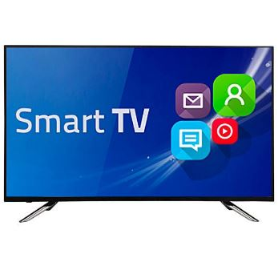

Más de 30 años,
avalan nuestra experiencia
Nosotros
En RUSSO Electrónica nos caracterizamos por la responsabilidad, seriedad y profesionalismo de nuestro personal. Somos una empresa ampliamente reconocida en la zona y un referente importante del sector. Marcamos la diferencia con un trabajo confiable y siempre responsable.
Controles Remotos
Todas las marcas y modelos para televisores LED, LCD y SMART TV. Con formato original y 6 meses de garantía, para tu tranquilidad.
Servicio Técnico
Reparaciones de televisores LCD, LED, SMART TV. Todas las marcas y modelos. Experiencia profesional con mas de 30 años en el mercado.
